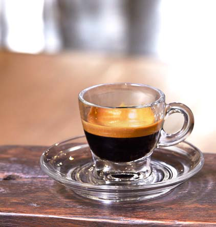
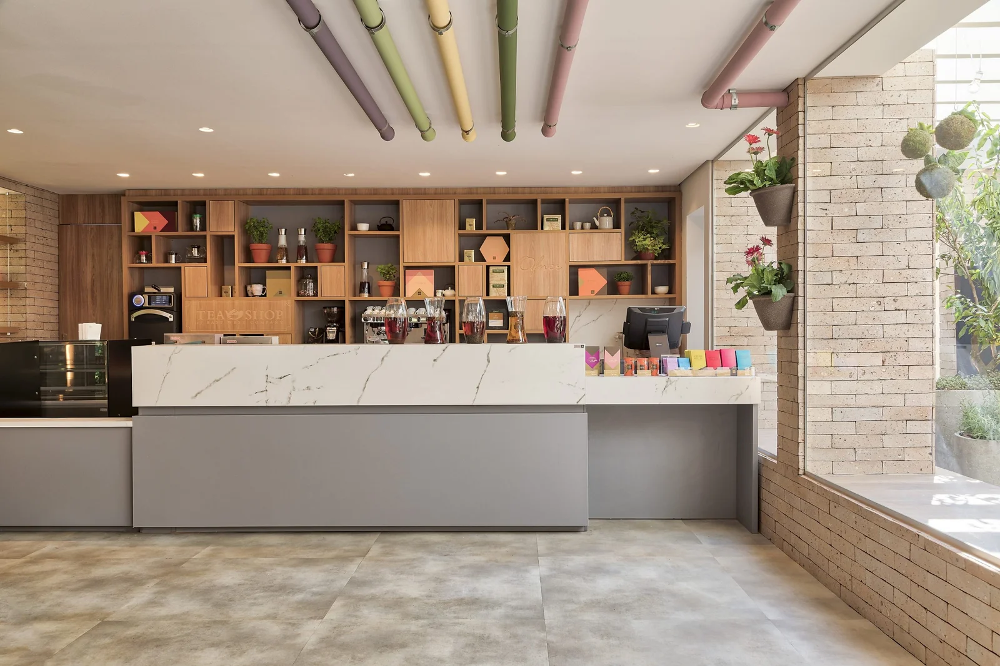
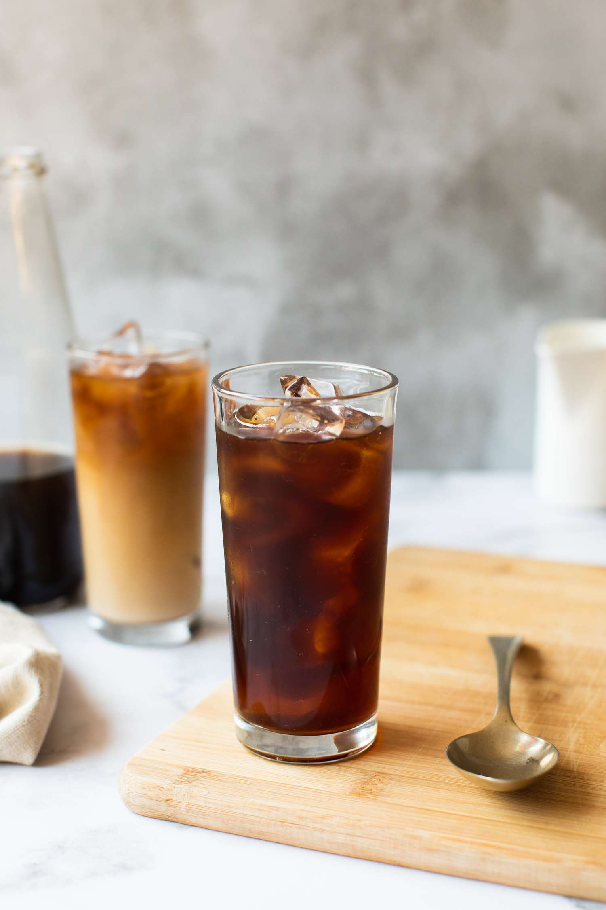

Espresso Tradicional
Blend exclusivo de grãos arábica torrados artesanalmente, extraído na hora.
R$ 7,50
A Café Raízes nasceu em 2015, na Serra da Mantiqueira, do sonho de dois irmãos apaixonados por café que decidiram trocar a vida na cidade grande por um pequeno sítio cercado de plantações centenárias. O que começou como uma torra caseira para amigos e vizinhos se transformou, poucos anos depois, na cafeteria artesanal que você conhece hoje.
Desde o início, nosso propósito foi resgatar o valor do café brasileiro cultivado por pequenos produtores, torrado em lotes pequenos e servido fresco, sem pressa. Cada grão que passa pelo nosso balcão tem origem rastreável e uma história para contar.
Hoje, além da torrefação própria, mantemos parceria direta com mais de doze famílias produtoras em Minas Gerais e no Espírito Santo, garantindo preço justo na origem e qualidade constante na xícara.
Clique em um produto para ver mais detalhes.

Blend exclusivo de grãos arábica torrados artesanalmente, extraído na hora.
R$ 7,50
Espresso encorpado com leite vaporizado e uma fina camada de espuma cremosa.
R$ 12,00
Café extraído a frio por 18 horas, suave e naturalmente adocicado.
R$ 14,00
Produzido diariamente pela nossa padaria parceira, folhado e crocante.
R$ 9,90
Receita da casa, fofinho por dentro e com cobertura de chocolate meio amargo.
R$ 11,50
Preparo lento e manual que realça as notas frutadas do grão selecionado do dia.
R$ 15,00Endereço: Rua das Palmeiras, 245 — Bairro Jardim das Flores
Telefone: (19) 3456-7890
E-mail: contato@cafraizes.com.br
Horário: Terça a domingo, das 8h às 19h